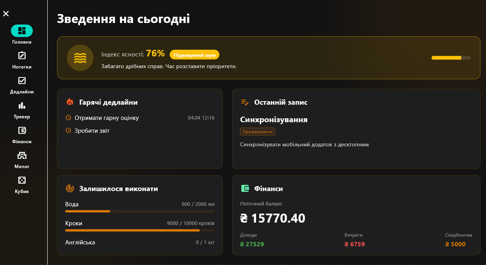

Додаток "ToDoDo"

Мобільний додаток для відстеження звичок та продуктивності, також має записник, міні гру та список задач. Написаний на Flutter & Dart

Мобільний додаток для відстеження звичок та продуктивності, також має записник, міні гру та список задач. Написаний на Flutter & Dart

Реалістичний симулятор на Unity. Включає механіки потреб персонажа, зміну дня/ночі та систему збирання автомобіля. 3D-моделі створені у Blender

Персональний голосовий помічник, написаний на Python. Вміє розпізнавати команди, відкривати програми та підтримувати діалог. Має базу даних жартів та фраз